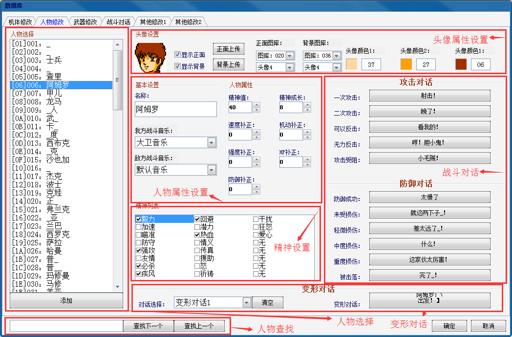
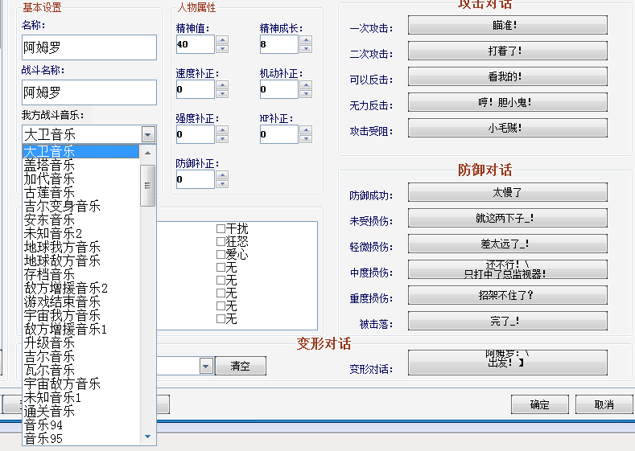
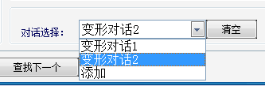
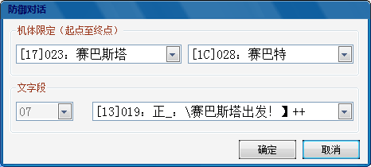
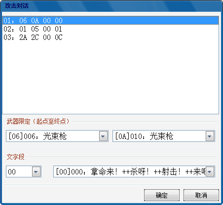
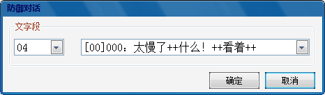

功能区域分布：

1.人物选择：选择列表框中的项，即可显示并编辑对应人物的相关信息。
2.头像设置：人物头像由正面（精灵）和背面（背景）组成，通过显示正面和显示背景的选择可单独预览头像正面和背面的效果。选择图库，再选择头像1或者头像2，3，4即可选择对应的图库位置（一个图库一共64格，一个头像为16格，划分为4个区域）上传头像图片，头像正面和背面同理。最右侧可编辑头像正面的颜色（任意选择调色板中的三色），头像背面为默认的白，浅灰，深灰三种，不可更改。
3.人物属性设置：人物名称直接输入更改即可，我方战斗音乐即人物归属于我方时的BGM，敌方战斗音乐即人物归属于敌方时的BGM，战斗过程中人物BGM播放的优先级为编号大的播放，如下图所示，音乐播放的优先级为通关音乐，未知音乐1，宇宙敌方音乐以此类推。人物精神为初始SP,精神成长方式请参考其他修改-成长方式，速度、机动、强度、防御、机动、HP这五项补正一般是用于敌方驾驶员，以区别与一般士兵的驾驶能力，机动补正加原有机动值不要超过16，三围和HP的补正均为1字节，即255。我们人物一般不设置5围补正，因为我方人物是唯一的，属性在机体属性中设置即可。

4.精神设置：原版共有19个精神可供选择，每个人物的精神个数上限为6个（当然也可以大于6个，但是在精神列表中无法显示完全，不建议如此修改），勾选相应的精神即可完成精神配置。
5.变形（起飞）对话：只针对我方人物而言的驾驶机体变形时或者从搭载母舰起飞时的对话。
 
选择“添加”指令即可添加多个对话段，选择相应的对话段，即可对对话段的属性进行编辑，编辑框如右图所示。机体限定为一个范围，指的是该人物驾驶某一范围的机体时才会使用相应的对话段。例如安藤正树驾驶17-1C号机体，则使用下面的07文字段的第13号对话，驾驶在此范围之外的机体则不会使用下面的文字段。变形对话2设置同理。利用多个变形对话，可以设定人物驾驶不同机体使用不同对话段（搭载母舰起飞时或者驾驶机体变形时）。
6.战斗对话：战斗对话分为攻击对话和防御对话两部分，战斗对话涉及到机体武器的配置，随意更改机体武器配置会造成死机，这个就是由战斗对话引起的，这个也是改版初期所说的某些机体更换武器出现花屏死机的原因。首先概述一下各个条件下对话段的调用：
一次攻击：主动第一次攻击
二次攻击：主动第二次攻击
可以反击：反击攻击
无力反击：由射程差引起的无法反击
攻击受阻：由于攻击方的机体或者武器的阻反特技引起的攻击方无法反击
防御成功：未被攻击方命中
未受损伤：损失HP值为0
轻微损伤：损失HP占比最大HP1%-10%
中度损伤：损失HP占比最大HP11%-35%
重度损伤：损失HP占比最大HP36%-99%
被击落：受到致命伤害被击落
 
以上分别为攻击对话和防御对话的编辑框。每一段攻击对话可分多条，以阿姆罗的一次攻击对话为例，一共有3条，每条为4字节，分别代表武器限定范围，对话段和对话编号。例如01条对话，表示使用06-0A号武器时调用00文字段的00号对话。02，3条对话同理。战斗过程中阿姆罗一次攻击时随机调用以上三条对话中的任意一条。总结以上，人物驾驶的机体配置的武器必须在人物战斗对话限定的范围之内，否则会发生花屏死机的情况。防御对话较为简单，直接选择文字段，再选择对话编号即可。